Comparativa extendida de vistas y funcionalidades de la plataforma, con capturas reales de la versión que corría el 1 de junio de 2026 frente a la versión actual.
Corte: 1 de junio de 2026 vs 3 de agosto de 2026 · lineablanca.bairdservice.com
1Resumen ejecutivo
Lo que existía el 1 de junio: portal del técnico con diagnóstico y completación, formulario público de solicitud con horarios en texto libre, flujo de repuestos con espera de precios/aprobaciones, y supervisores que solo recibían avisos por WhatsApp — sin panel propio.
Lo que se sumó desde entonces:
🛡️ Portal del supervisor completo (no existía): acceso con código por WhatsApp, listado y ficha de cada servicio, descarga en PDF, y ahora la subida de la guía de envío de repuestos.
📦 Flujo de repuestos rediseñado: pedido directo al supervisor de la marca, nuevo estado Repuesto en camino, y el cliente agenda la visita de finalización desde WhatsApp.
🏷️ Foto de la placa obligatoria en el diagnóstico, con su propia sección.
🗓️ Agenda real con cupos: franjas canónicas con disponibilidad en vivo y agendamiento automático al crear la solicitud (ya no hay ida y vuelta por WhatsApp para confirmar horario).
🏷️ Estados renombrados y simplificados (de 22 a 19): cada etiqueta dice quién debe actuar.
📲 +15 plantillas de WhatsApp nuevas que cierran huecos de comunicación en todo el ciclo.
📄 Guías y reportes: Guía de pagos, Guía del Supervisor, informe semanal en PDF y canal de novedades.
2Portal del técnico
❌ 1 de junio
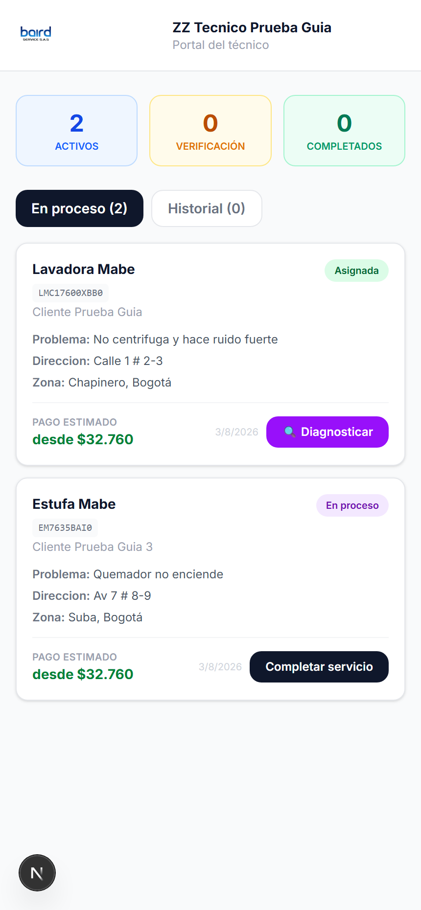
✅ Hoy
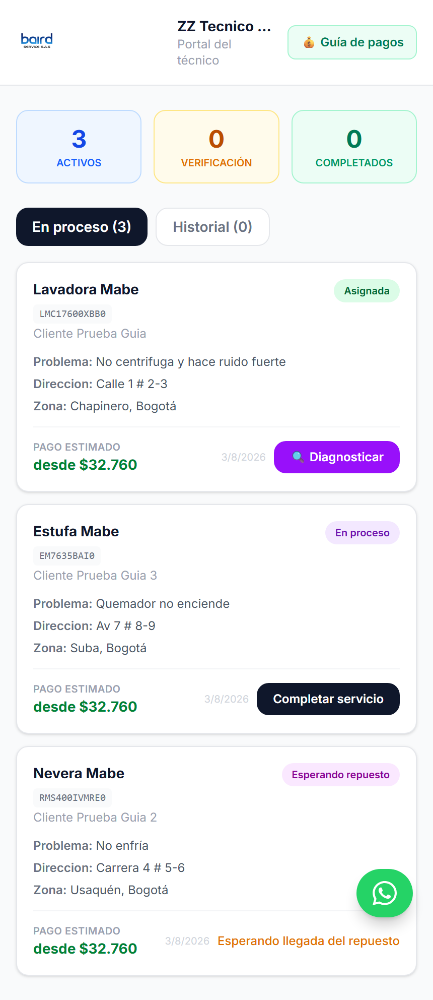
Mismo técnico, mismos servicios. En junio el servicio esperando repuesto desaparecía de la lista (mira el contador: 2 vs 3) — hoy siempre está visible con su estado.
Los servicios con repuesto ya no se pierden de vista: aparecen en "En proceso" con las etiquetas Esperando repuesto, Repuesto en camino o Repuesto recibido y una línea que explica qué se está esperando.
💰 Guía de pagos a un toque desde el encabezado, y el QR de pagos Baird (Bre-B) a la mano para cobrar en sitio.
Etiquetas de estado renombradas: p. ej. "Cliente debe aprobar siguiente paso" o "Cliente debe confirmar servicio" en vez de los nombres técnicos ambiguos de antes.
3Formulario de diagnóstico
❌ 1 de junio
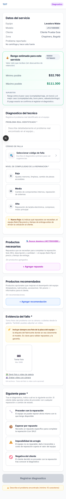
✅ Hoy
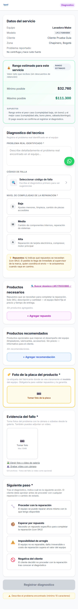
🏷️ Nueva sección obligatoria "Foto de la placa del producto" — sin ella no se puede enviar el diagnóstico (antes era solo un recordatorio).
📦 En garantía, el aviso del flujo de repuestos cambió: el pedido va directo al supervisor de la marca — ya no dice "el equipo Baird fija precio y tiempo de entrega".
🛒 Búsqueda de repuestos conectada a la tienda Baird y link al despiece Serviplus según el modelo.
El rango de pago estimado se mantiene, con el detalle de bonos al elegir complejidad.
4Completar servicio
❌ 1 de junio
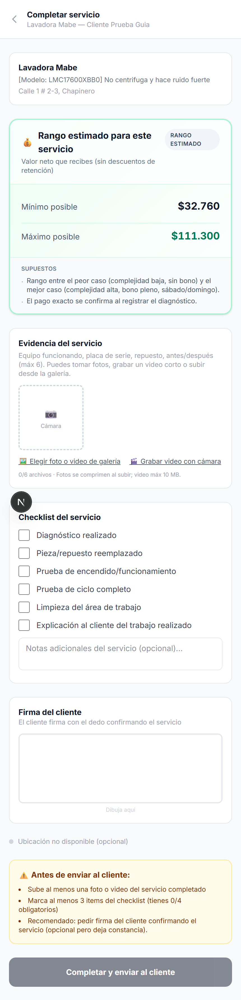
✅ Hoy
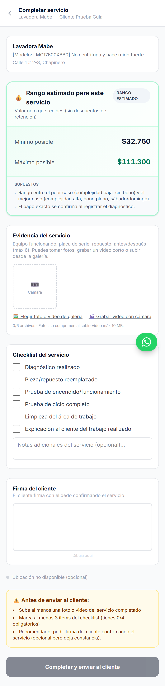
Se mantuvo a propósito simple: fotos/video, checklist y firma del cliente — sin pasos nuevos obligatorios.
El resumen "qué te falta antes de enviar" lista todo de una vez (antes el técnico descubría los faltantes uno por uno).
El estado del WhatsApp al cliente se muestra con la verdad: enviado, filtrado o fallido (antes podía decir "éxito" sin haber salido).
5Solicitud del cliente (/solicitar)
❌ 1 de junio
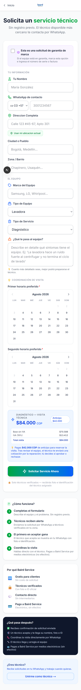
✅ Hoy
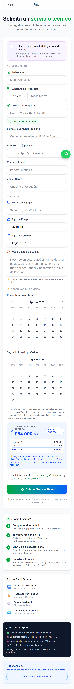
🗓️ Selector de fecha + franja con cupo en vivo: el cliente solo ve franjas disponibles (antes escribía el horario en texto libre y podía chocar con la agenda).
⚡ Auto-agendamiento: al enviar el formulario la visita queda agendada de una vez y los técnicos son notificados al instante — ya no hay que esperar el WhatsApp de "confirma tu horario" (aplica a garantía y particular).
Términos y condiciones se aceptan con checkbox en el mismo formulario.
Campos de edificio/conjunto y apartamento para direcciones más precisas.
6Flujo de repuestos (garantía)
1 de junio: diagnóstico → pendiente de precios (admin fija "tiempo de entrega") → cliente aprueba el paso → esperando repuesto → admin marca recibido → cliente reprograma → en proceso
Hoy: diagnóstico → esperando repuesto al instante (supervisor recibe SKU × cantidad + dirección) → supervisor sube guía de envío → repuesto en camino (aviso a cliente y técnico) → cliente agenda la visita de finalización → en proceso
❌ 1 de junio — el cliente reprogramaba cuando el repuesto YA había llegado
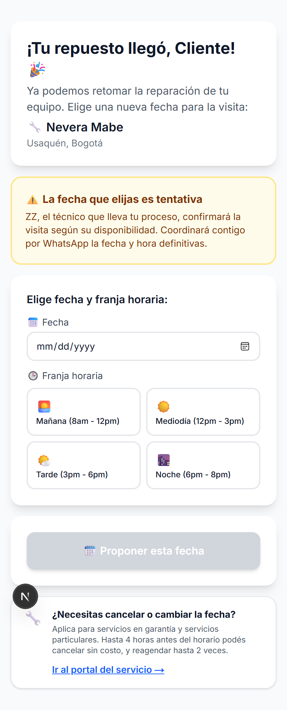
✅ Hoy — agenda desde que el repuesto va en camino
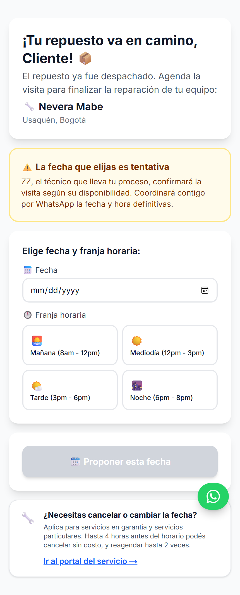
La página del cliente: antes esperaba a que el repuesto llegara físicamente; hoy agenda apenas se despacha, con la misma validación de agenda (franja + cupo) del agendamiento inicial.
7Portal del supervisor — NUEVO (no existía en junio)
El 1 de junio los supervisores no tenían ninguna vista propia: la supervisión era solo por los avisos de WhatsApp de cambio de estado (estrenados pocos días antes). Todo lo de abajo se construyó después.
🆕 Entrada de autoservicio — código por WhatsApp
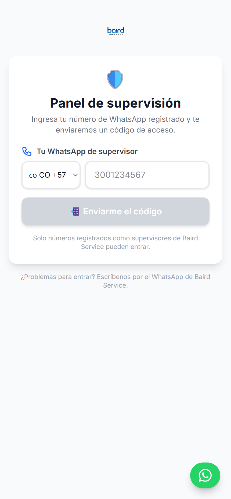
🆕 Listado en tiempo real (solo lectura)
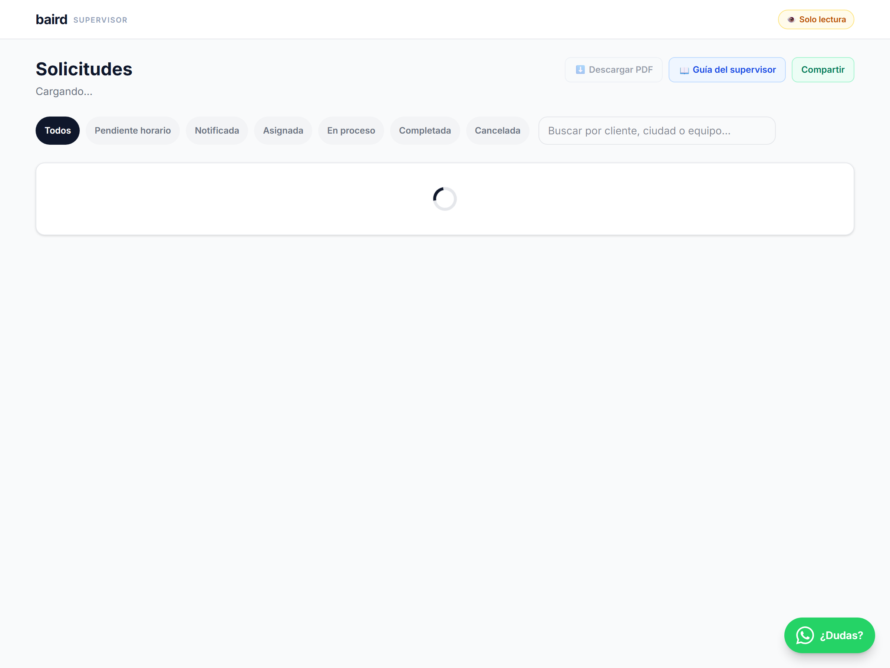
🆕 Ficha del servicio + repuestos + guía de envío
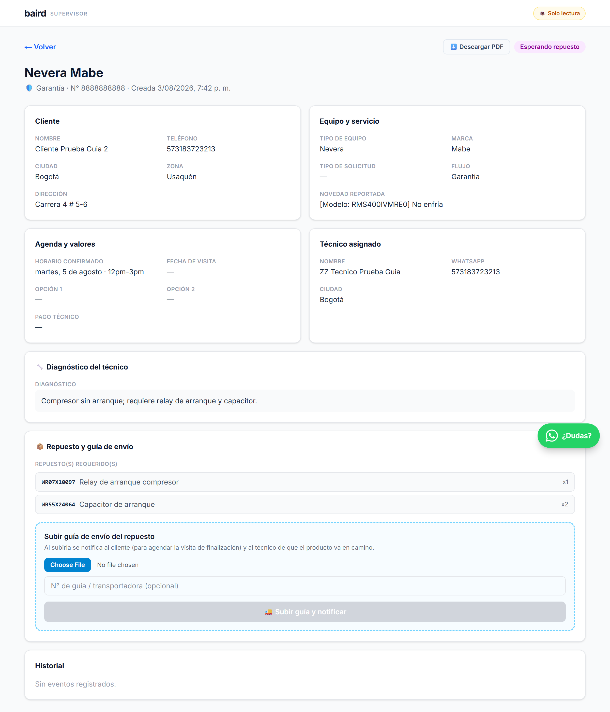
🧭 Cómo funciona hoy
Acceso: link personal permanente o entrando a /supervisor con tu número (código de 6 dígitos por WhatsApp).
Alcance forzado en el servidor: cada supervisor ve solo su ámbito (garantía/particular) y marca.
PDF: listado y ficha descargables.
Guía de envío: única acción de escritura — al subirla avisa a cliente y técnico.
Informe semanal en PDF por WhatsApp + canal de novedades + Guía del Supervisor.
8Estados del servicio: de 22 a 19, con nombres claros
Las etiquetas que ven técnicos, supervisores y el panel admin se renombraron para que digan quién debe actuar, y se eliminaron estados muertos o duplicados.
Antes (1 de junio)
Hoy
Qué significa
verificacion_pendiente
Cliente debe aprobar siguiente paso
Tras el diagnóstico (garantía), el cliente aprueba la acción propuesta
Supervisor subió la guía de envío; el cliente agenda la finalización
9Comunicación por WhatsApp: huecos cerrados
En junio varios momentos del ciclo quedaban en silencio o dependían de mensajes que fallaban fuera de la ventana de 24h. Desde entonces se estrenaron plantillas para:
Cliente: horario confirmado con link de gestión permanente, aviso de solicitud expirada, paso aprobado/rechazado, cotización con desglose claro (v3), valor actualizado, aviso de anticipo, repuesto solicitado/en camino/recibido con botón de agenda.
Técnico: datos completos del repuesto en garantía (N° de garantía + SKU + dirección), repuesto entregado, repuesto en camino con N° de guía, nueva fecha elegida por el cliente, resolución del paso (aprobó/rechazó), pago clarificado (tu pago vs total del cliente).
Supervisor: bienvenida con su alcance, acceso al panel, código de ingreso, novedades de repuesto con el requerimiento exacto, cambio de fecha, informe semanal en PDF y canal de novedades de la plataforma.
10Otras mejoras que no se ven en una captura
Agenda con cupo real: máximo de visitas por franja, validado en el servidor; el panel admin tiene vista de calendario y mapa de servicios.
Tarifas y pagos documentados: Guía de pagos pública para técnicos (cotización particular con IVA y utilidad calculados automáticamente, visita de diagnóstico con pago fijo, recargo de fin de semana y festivos también en particular).
Trazabilidad: cada cambio de estado queda en un historial auditable visible en la ficha (quién lo movió y cuándo).
Robustez en campo: reintentos automáticos ante red 4G inestable, compresión de fotos antes de subir, servidor más cerca de Colombia.
Seguridad: accesos admin restringidos por lista de correos, endpoints del portal supervisor validados en el servidor, y cierre progresivo de la capa de datos (RLS).
Visibilidad del negocio: Google Analytics + conversiones de Ads del formulario, y páginas de servicio por ciudad para búsqueda orgánica.
11Resultados y crecimiento
Datos reales de la plataforma al corte del 3 de agosto de 2026 (fuente: base de datos de producción).
61 ×3
Solicitudes acumuladas (eran 20 al 31 de mayo)
41
Solicitudes nuevas desde el 1 de junio (25 en junio · 15 en julio)
16 +7
Servicios completados (eran 9)
14
Ciudades y municipios atendidos
15
Técnicos registrados (3 verificados activos)
3
Supervisores con panel propio (antes: 0)
El volumen se triplicó: en los dos meses desde el corte entraron el doble de solicitudes que en toda la historia previa de la plataforma (41 nuevas vs 20 acumuladas al 31 de mayo). El flujo de garantía concentra 46 de las 61 (75%).
Trazabilidad que no existía: 194 eventos de auditoría registrados (cambios de estado, cancelaciones, reagendamientos) — el 76% generado desde junio, cuando se estrenó el historial por servicio.
Cobertura de comunicación: el catálogo de WhatsApp pasó de ~25 a 34 plantillas, cerrando los silencios del ciclo (horario confirmado, anticipos, repuestos, pasos aprobados, accesos de supervisor, informes).
Del chat al panel: la supervisión pasó de solo mensajes de WhatsApp a un portal en tiempo real con PDF, informe semanal y ahora gestión de guías de envío.
Presencia digital: el sitio quedó medido de punta a punta (Analytics + conversiones de Ads del formulario) y con 7 páginas de servicio por ciudad indexadas en Google.